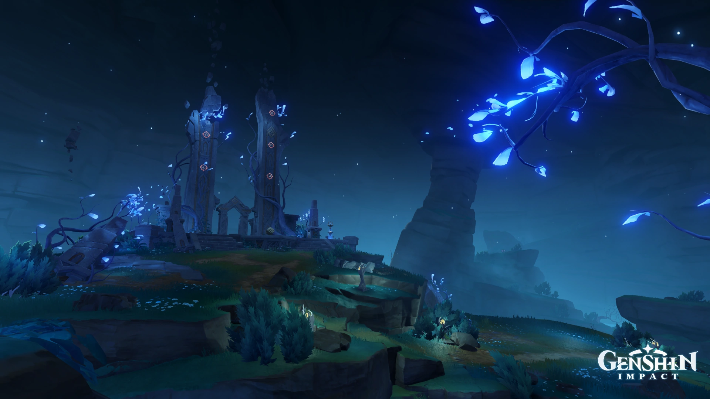
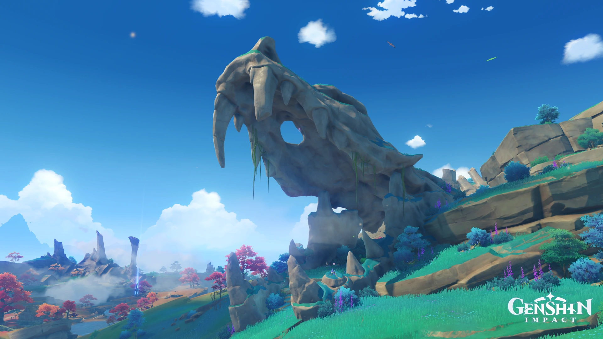

Inazuma é uma das sete nações de Teyvat. É o arquipélago que venera a Shogun Raiden, a Arconte Electro, que também é a líder de seu corpo governante, o Bafuku de Inazuma.
No ano passado, em relação aos eventos atuais do jogo, a situação em Inazuma deu uma guinada drástica para o isolacionismo, a nação foi fechada pelo Decreto Sakoku. "Baal" também promulgou o Decreto de Caça à Visão, declarando que as Visões, como presentes dos deuses, e deveriam estar nas mãos da divindade - e agora está reunindo todas as Visões em Inazuma para incrustá-las nas mãos de uma estátua do Deus dos Mil Braços e Cem Olhos
Atsuko, um cidadã de Inazuma que escapou para Liyue, descreve o país como tendo um ambiente "tenso" e "perigoso" e desencoraja viajar para lá; ela também observa que a Comissão Kanjou, uma das Comissão Tripla, conduzem muitas avaliações que os cidadãos devem passar para receber permissão para deixar Inazuma. Ela contornou essas avaliações fazendo sua própria jangada e fugindo para Liyue. No entanto, os Fatui parecem conseguir entrar e sair livremente devido à sua imunidade diplomática.

Existe pouca informação sobre a Guerra dos Arcontes em Inazuma. O arquipélago foi unido sob o domínio da Arconte Electro, a Raiden Shogun - Makoto (Baal), com sua irmã gêmea Ei (Beelzebul) servindo como sua kagemusha. Um dos deuses que eles derrotaram foi Orobashi, que fugiu e se encontrou além do selo que separava Enkanomiya do resto de Teyvat. Desde então, resgatou as pessoas de lá, trouxe-as de volta à superfície e criou a Ilha Watatsumi usando suas próprias escamas para seu povo. Orobashi e o povo de Watatsumi viveram pacificamente dentro da nação de Inazuma até a rebelião de Orobashi contra a Shogun.
Orobashi no Mikoto ou Orobaxi também conhecido como Watatsumi Omikami, era um antigo deus serpente que foi derrotada por Beelzebul na Ilha Yashiori. A Garganta Musoujin é a cicatriz deixada pela por Beelzebul quando ela desferiu um golpe de seu Musou no Hitotachi, matando a serpente.
Os restos de Orobashi podem ser vistos por toda a ilha, com seu crânio localizado na Cabeça da Serpente. Seu poder persistente resultou no Tatarigami, um fenômeno na ilha que causa desastres naturais e pode levar as pessoas à loucura.
Os residentes da Ilha Watatsumi e seus líderes, o Clã Sangonomiya, adoram Orobashi, pois ele os ensinou a cultivar e fundir após descobri-los nas profundezas do oceano no Mar Sombrio. Portanto, o povo da Ilha Watatsumi é muito grato a Orobashi e o adora como sua divindade guardiã mesmo depois de sua morte.
Em algum ponto no tempo, Orobashi fugiu de uma região desconhecida para Enkanomiya (anteriormente conhecido como Byakuya no Kuni) — a nação abissal de todas as noites — no Mar Sombrio. Lá, ele encontrou um grupo de "pessoas abandonadas" vivendo no fundo do oceano, à mercê do Dragão Herdeiro das Profundezas. Com pena deles, o deus os acolheu como seus próprios e derrotou o Dragão Herdeiro das Profundezas. quebrou o coral que cresceu de seu corpo — uma manifestação de seu poder — para criar a Ilha Watatsumi e seu povo pudesse viver acima da superfície novamente. Orobashi guiou os residentes da Ilha Watatsumi e os ensinou a cultivar e fundir, pelo que eles eram profundamente gratos e o adoravam.
Durante a Guerra dos Arcontes, os arquipélagos de Inazuma foram unidos sob o governo de Baal, com sua irmã gêmea Beelzebul atuando como seu kagemusha (dublê de corpo). Todos aqueles que moravam em Inazuma estavam contentes com sua sorte e não procuraram levar o que não era deles, para não serem erradicados pela Shogun Raiden.
Quando o Ritual de Purificação da Sakura Sagrada foi desenvolvido, aqueles que realizavam o ritual deveriam implorar perdão aos santuários Narukami e Watatsumi antes de iniciar o ritual, sugerindo que Orobashi pode ter tem sido adorado por pessoas de outras ilhas por um tempo.
Por muitos anos, Orobashi respeitou a fronteira entre a Ilha Watatsumi e Narukami e ambos viveram em paz. A paz foi quebrada em algum ponto durante a guerra do arconte, milhares de anos atrás, quando Orobashi invadiu a Ilha Yashiori sem aviso e desencadeou um ataque violento guerra entre seu próprio povo e o do Shogun. A guerra causou grande sofrimento e muitas baixas em ambos os lados, entre elas o general tengu de Beelzebul, Sasayuri.
No final da guerra, Orobashi foi morto pela Shogun Raiden na Ilha Yashiori, usando sua técnica de esgrima Musou no Hitotachi. O golpe mortal criou uma grande fenda, dividindo a ilha em duas, e os restos mortais de Orobashi ainda repousam por toda a ilha. Touzannou, general de Orobashi (mais tarde conhecido como Akuou) também foi morto por este golpe mortal. A sacerdotisa Mouun do Clã Yuna foi morto pelos subordinados de Sasayuri enquanto estava em retirada, enquanto sua irmã gêmea Ayame desapareceu em combate.
Seu ódio persistente se tornou o Tatarigami, que o Shogunato posteriormente utilizou para criar a Fornalha Mikage. Após a morte de Orobashi, o santuário principal na Ilha Watatsumi foi posteriormente abandonado, com um novo santuário sendo construído em outro lugar.
O verdadeiro motivo por trás desse ataque permanece misterioso, já que Sangonomiya tem uma extrema falta de material histórico escrito. Mas dizem que o povo da Ilha Watatsumi passou por um longo período de fome e eles conseguiram persuadir Orobashi a invadir a Ilha Yashiori e reivindicá-la para si.
Baal, nome real Raiden Makoto, era a Arconte Electro original de Inazuma, e predecessora de sua irmã gêmea, Beelzebul (Raiden Ei). O ideal divino de Baal parece ser "transitoriedade/efêmero".
Baal foi uma das vítimas do cataclismo há quinhentos anos. Desde então, Beelzebul assumiu o Shogunato e o título de Shogun Raiden.
Baal e Beelzebul eram deusas gêmeas que venceram a Guerra dos Arcontes juntas. Quando Baal estabeleceu o Shogunato, Beelzebul se tornou sua kagemusha (japonês: 影武者 "guerreiro das sombras"). Em outras palavras, ela agia como dublê de corpo de Baal. Até onde o mundo sabia, havia apenas uma deusa chamado Baal, a Shogun Raiden de Inazuma. O nome "Baal" e o título de Shogun Raiden foram entendidos como uma referência a ambas.
De acordo com Yae Miko, embora ela não fosse próxima de Baal, com base em seu primeiro encontro, ela a considerou uma deusa gentil e que não gostava de violência, que valorizada a beleza de cada momento. A Musou Isshin, a espada que agora pertence a Beelzebul, era originalmente de Baal, e quando Baal a possuia, ela nunca foi afiada, sendo simplesmente um símbolo da verdadeira paz. Ela gostava de passar o tempo com Beelzebul e era conhecida por ser muito relaxada.
O Bafuku de Inazuma, também chamado de Shogunato de Inazuma ou simplesmente Shogunato, é a entidade governamentque rege Inazuma. É liderado pela Arconte Electro, que também é conhecida como Shogun Raiden. Sob o Bafuku de Inazuma está a Comissão Tripla, o grupo de três comissões que supervisionam todos os assuntos em Inazuma.
O Sanbugyou ou Comissão Tripla é um termo coletivo para as três organizações que supervisionam todos os assuntos em Inazuma. Aproximadamente equivalente ao Qixing de Liyue e as Oito Corporações em Liyue, bem como os Cavaleiros de Favonius em Mondstadt.
A Comissão Tripla se reúne em Tenshukaku para decidir sobre assuntos governamentais. Na Missão do Arconte: Uma Flor Desabrocha em Uma Prisão, Kamisato Ayaka diz que sempre que a Comissão Yashiro fez uma proposta para revogar o Decreto da Caça à Visão, mas ela foi prontamente vetada pela Comissão Tenryou e a Comissão Kanjou. Isso implica na existência de algum tipo de conselho ou comitê por onde as propostas devem passar, e que a Comissão Yashiro não pode apresentar sua proposta diretamente à Shogun Raiden. Isso é semelhante ao Hyojoshu, o mais alto órgão do governo no shogunato Tokugawa, que era um conselho formado pelos mais altos funcionários do governo e o bugyou.
Ela é liderada pelos clãs Kamisato (Comissão Yashiro), Clã Hiiragi (Comissão Kanjou), Clã Kujou (Comissão Tenryou)
{kind=link}
{kind=link}
{kind=link}
{kind=link}
{kind=link}
{kind=link}